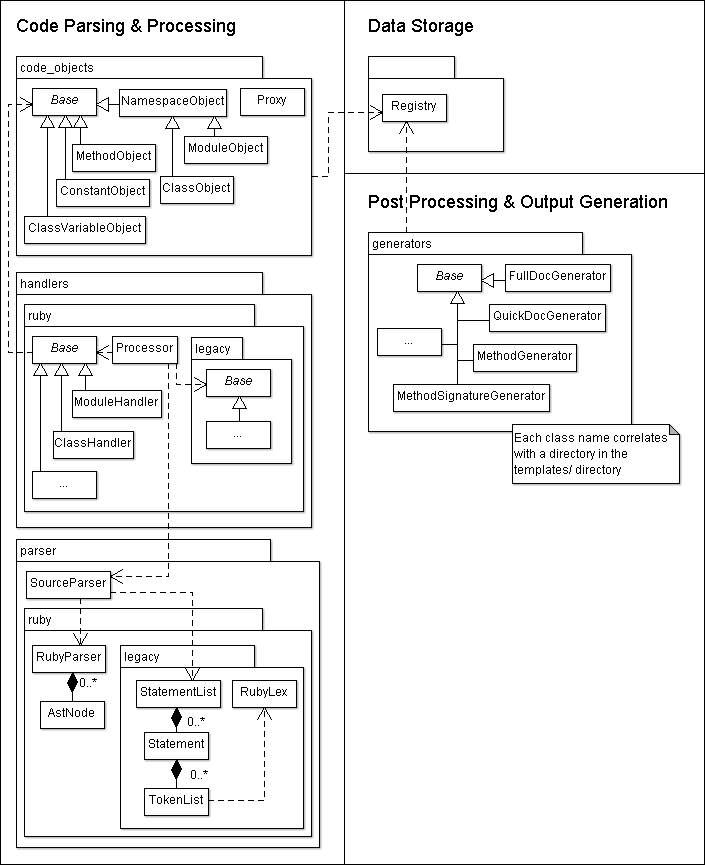

Architecture Overview
YARD is separated in three major components, each of which allows YARD to be extended for a separate purpose. The split also emphasizes YARD’s design choice to explicitly separate data gathering from HTML document generation, something that tools like RDoc do not do. These components are:
This separation is a major goal of the project, and means that YARD is not just a tool to generate HTML output. The expectation is that any subset of YARD’s major components may be used, extended or modified independently. YARD may be used just as a data gathering tool (to parse and audit code), just as a data source (a webserver containing raw unformatted data about code), or just as a conventional HTML documentation generation tool (like RDoc).
The important classes and dependencies of these components are shown in the following class diagram:

Code Parsing & Processing Component
This component is made up of four sub-components, each of which have separate tasks during the data gathering process (note: the tag architecture is not shown in the class diagram). These sub-components are:
The parser component reads source files and converts it into a set of statements which the handlers then process, creating code objects which in turn create tags (meta-data) attached to the objects. These objects are all added to the YARD::Registry, the data store component.
Data Storage Component
This component is currently implemented as a simple Ruby marshalled flat namespace of object. The implementation is found in the single class YARD::Registry, which is the centralized repository for all data being parsed, stored and accessed. There are future plans to improve this storage mechanism to be backend agnostic and allow for more robust storage.
Post Processing & Templating System
This component handles processing of objects from the registry through a templating engine that allows output to a variety of formats. Practically speaking, this is where templates can be implemented to change the design, output or structure of the data. See Templates Architecture for a complete overview.